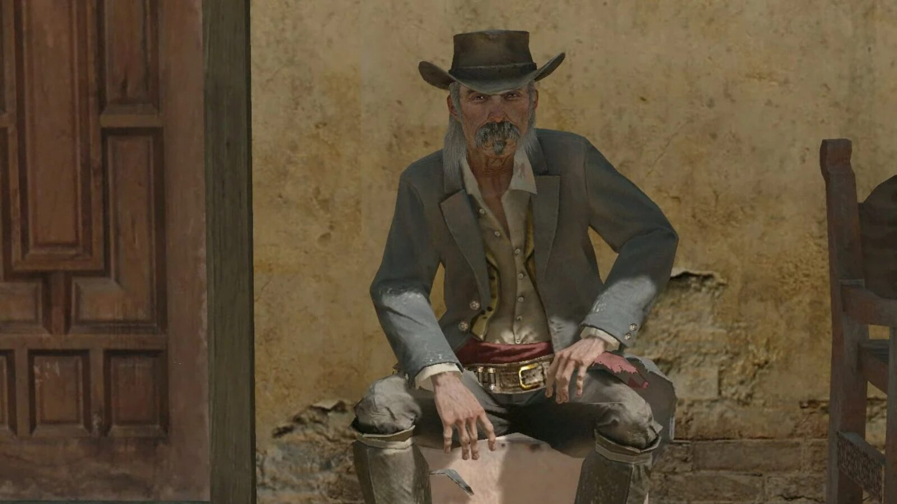
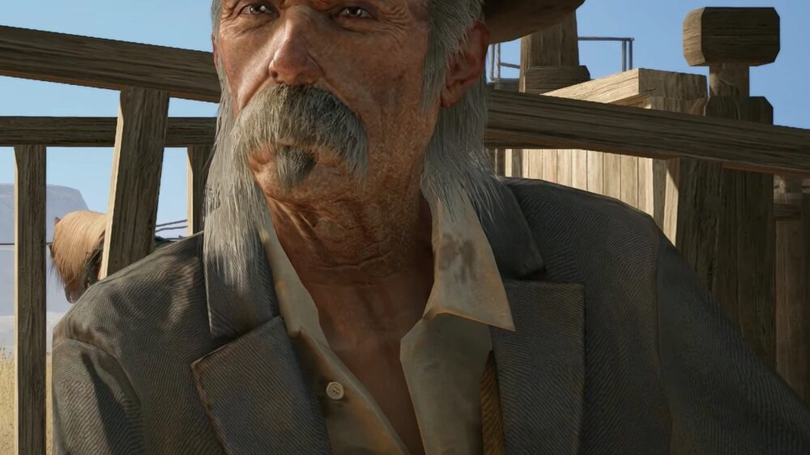
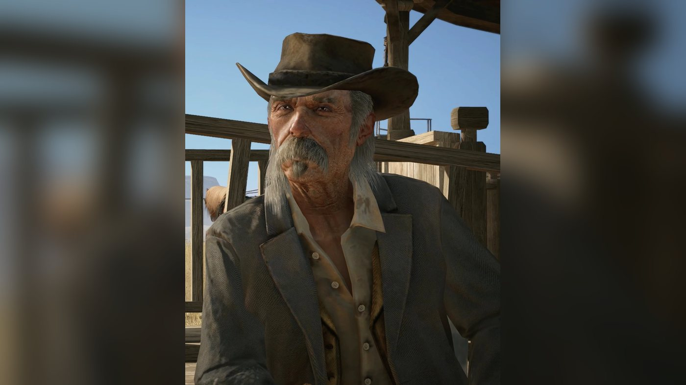
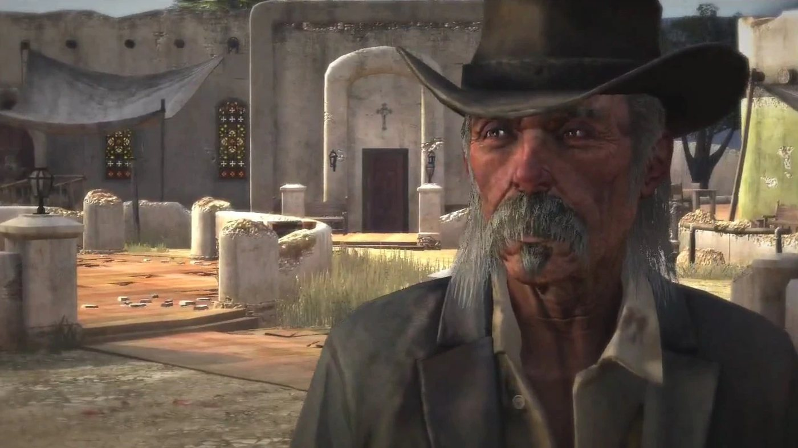
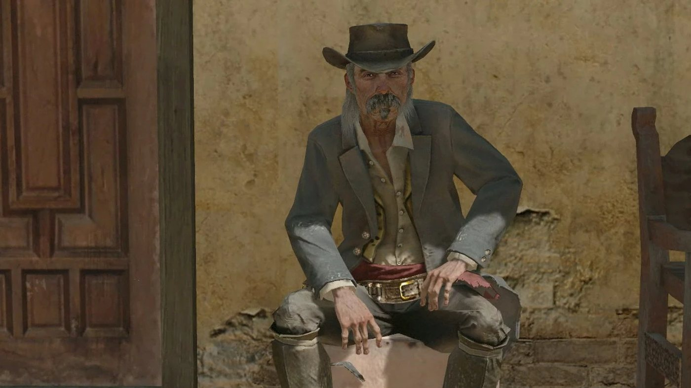
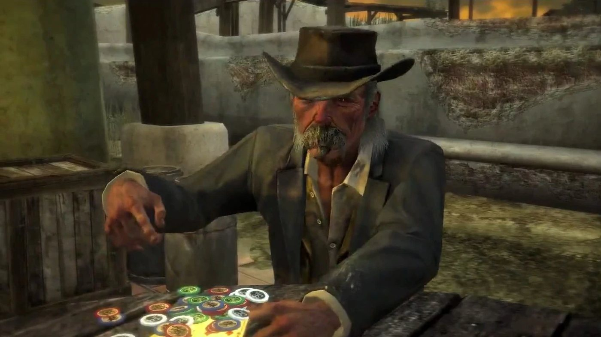
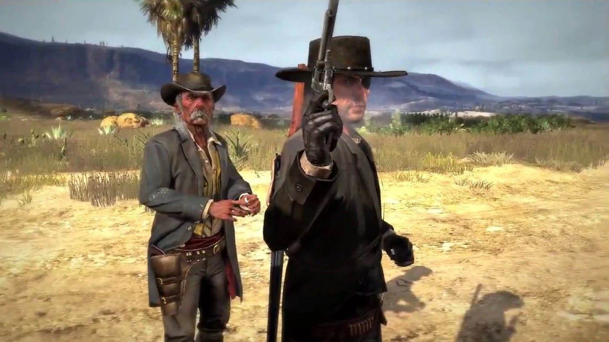

Character · Nuevo Paraíso
Landon Ricketts
Landon Ricketts is a retired American gunslinger in Red Dead Redemption (2010), set in 1911. Newspapers in the game tie him to the Blackwater Massacre of 1899 and to the deaths of the Butcher Brothers in 1896. He lives in Chuparosa, in Nuevo Paraíso, when John Marston arrives there. He trains John, helps him free Luisa Fortuna from an army jail, sits with him at a poker game that ends in two duels, and rides with him to take a convoy of prisoners of Agustin Allende across the border. The two part at the border. In 1914 the Blackwater Ledger reports that he has died in his sleep, three years after returning to the United States.
He is played by Ross Hagen. He also appears in Undead Nightmare and is mentioned in Red Dead Redemption 2.
- Name
- Landon Ricketts
- Born
- Not given in the game; about 1861 according to the Red Dead Wiki, citing the Game of the Year Edition guide (which calls him 50 years old)
- Died
- 1914, in his sleep, three years after returning to the United States (Blackwater Ledger)
- Status
- Deceased
- Nationality
- American
- Residence
- Chuparosa, Nuevo Paraíso (1911); the United States from 1911
- Occupation
- Retired gunslinger
- Family
- A wife, unnamed, deceased before 1911
- Allies
- John Marston, Luisa Fortuna
- Enemy
- The Mexican Army of Agustin Allende
- Weapons
- Cattleman Revolver, Schofield Revolver
- Games
- Red Dead Redemption, Undead Nightmare; mentioned in Red Dead Redemption 2
- Played by
- Ross Hagen
Biography
Origins
Landon Ricketts is an American gunslinger. According to the Red Dead Wiki, which cites the Red Dead Redemption Game of the Year guidebook, he was born around 1861. Red Dead Redemption gives no birthplace and names no parents. Stories about him circulated widely in the late 19th century: when John Marston meets him in 1911, he says Ricketts was famous when he was a boy and that he heard many stories about him. Ricketts himself says he spent twenty-five years killing men. He was married. His wife died before 1911; the game gives neither her name nor the cause of her death, and Ricketts mentions her only in a joke at the poker table.
Two articles of the Blackwater Ledger in Red Dead Redemption give the main dates of his career. The first, "Landon Ricketts Rumored Alive", appears in issue No. 55, which can be read during the first act. It says that Ricketts shot and killed both Butcher Brothers in 1896 and survived the Blackwater Massacre of 1899. The paper credits him with many other killings as well, some of them rumored and some verified. It adds that he was long thought dead after a gunfight late at night in eastern California in 1902, and that reports from Mexico now suggest he is alive south of the border. The article calls him possibly the last of the great gunmen and wonders whether he will join a Wild West show. Neither article says which side he was on at Blackwater, and Red Dead Redemption 2, which begins after the gang's failed ferry robbery and tells it only through the characters' dialogue, never mentions him in connection with it.
By 1911 Ricketts lives in Chuparosa, a town in the Perdido region of Nuevo Paraíso, in Mexico. He holds no office there. The townspeople call on him when bandits strike, and Ramon, a man of Chuparosa whose bank wagon comes under attack, calls him the savior of the town. The region is governed from Escalera by Colonel Agustin Allende, whom the rebels of Abraham Reyes are fighting.
Red Dead Redemption (1911)
In 1911, agents of the Bureau of Investigation hold John Marston's wife and son to force him to hunt down his former companions of the Van der Linde gang. John is looking for Bill Williamson and Javier Escuella when he crosses into Mexico at the end of the first act, ferried across the river by Irish. Ricketts gives John four missions in Nuevo Paraíso, from "The Gunslinger's Tragedy" to "The Mexican Wagon Train", and appears in no mission of the first or third act.
Act II: Nuevo Paraíso
"The Gunslinger's Tragedy" opens as John walks into Chuparosa. Local bandits demand a toll, call it a little taxation, take his hat and order him to remove his boots. John kneels, then shoots them all and takes his hat back. An older American who has watched the scene congratulates him with sarcasm on his way of improving border relations and tells him that a man who kills peasants becomes a peasant. When John says he never aimed higher, the stranger calls him a socialist. He then tells John that he handles his gun sloppily and would not stand a chance against another real gunman, and offers to show him a few tricks. Asked his name, he says it no longer matters. John, asked in return, says he never had a name and was raised in an orphanage.
Outside the town, the stranger has John shoot glass bottles. After the first round he gives his name, Landon Ricketts, and tells John he is the only gunman of his time still alive. John explains that he is looking for Williamson and Escuella. Ricketts answers that the region is full of Americans on the run, mercenaries and revolutionaries. He adds that another local man is promising the peasants their freedom, like the two or three before him, and that Colonel Allende runs the region like a feudal king. Before the second round he tells John to keep his back straight so the gun does not jump, and hands him a Schofield Revolver, which he calls a real gun. He then fires a shot to scare a flock of vultures off the rooftops so that John can bring several down at once, which he presents as a service to the people of Chuparosa.
Walking back, Ricketts says he is surprised that anyone still remembers him. John says men still argue over who is the toughest, who is the fastest and who shot people in the back, and Ricketts bets he is still the fastest. Ramon then runs up: the bank's wagon is being attacked outside town. On the way, Ricketts asks why John hunts the two men. When John says they were friends once, Ricketts compares a man who hunts his old friends to a buzzard and supposes there is a high bounty on them. John answers with a question: what would he do if someone held the people he loved and threatened to kill them. Three bandits are robbing the wagon, one of them holding the driver hostage; John frees him with a shot to the bandit's head. Three more bandits block the road on the way back. Ricketts and John bring the wagon into Chuparosa, where the driver thanks them, and Ricketts asks only for a whiskey later.
In "Landon Ricketts Rides Again", John finds Ricketts at the hotel in Chuparosa with Emilio Fortuna and another man, who have been talking about a Mr. Escuella. Ricketts translates John's questions, but Emilio cannot say whether the man is Javier or whether he travels with a big American. Ricketts then explains that the army holds Emilio's sister, Luisa Fortuna, a teacher. When John says the man's troubles are not his own, Ricketts tells him that those who sit on the fence also make a choice. John retorts that Ricketts is a man living in the past who ran away from home; Ricketts answers that he is a fighter. He has also heard that John's recent encounters with Bill Williamson went badly, and concludes that John needs his help more than he thought.
Ricketts takes the train, and John can ride with him or go ahead on horseback. They get off at Casa Madrugada and ride to El Matadero, where they are to find a man named Carlos. On the way, Ricketts explains that Luisa is a rebel close to Reyes and that her looks are usually enough to interest Allende. They find Carlos carving a pig at the butchery. He confirms that Luisa is still held in the caves above the village and distracts the two guards at the entrance. Ricketts and John then fight their way inside, killing about two dozen soldiers. At the cell, John holds off the guards while Ricketts sets dynamite on the door and blows it open. Luisa is barely alive. Ricketts carries her out while John covers him, and they flee on horses that Carlos has left at the cave mouth.
More soldiers chase them out of the canyon. Near Diez Coronas, Carlos meets them and takes Luisa away for treatment. Before she leaves, Ricketts asks her whether a man named Javier Escuella was among those holding her. She does not think so, but remembers hearing the name in prison, from bad people. Ricketts takes it as proof that Javier is still in Mexico.
In "Lucky in Love", John finds Ricketts winning at poker in the Chuparosa cantina, against Andreas Müller, a German silver prospector, Manolo Santander and a man the mission calls the Stranger. Ricketts orders champagne for everyone and invites John to sit down. John wins two hands, and Müller accuses him of cheating, then accuses Ricketts of having planted him; Ricketts answers that he had already beaten Müller. Müller draws, everyone in the cantina draws in turn, and Ricketts names the standoff. Müller says he will not fight Ricketts, only the American, and challenges John to a duel outside. He names a man called Sanchez as his second; according to the Red Dead Wiki, Sanchez is the Stranger. Walking to the street, Ricketts explains that a duel is about timing: draw too early and the shot is less accurate, then pick the targets carefully. John kills Müller.
Ricketts laughs that Müller always played his cards too early, and the two men drink with the dead man's money. The Stranger then comes back holding a young woman and threatens to cut her throat, and challenges John. John kills him in a second duel without harming her. Four accomplices open fire; according to the mission page, Manolo Santander is among the dead, killed by John or by Ricketts. When the shooting is over, Ricketts says the poker game is certainly over, and remarks that Müller will not be missed. The two men tip their hats and part.
"The Mexican Wagon Train" is the last mission of the strand. Ricketts has no news of Javier. Over drinks at the hotel, John tells him he left the gang after it left him for dead, that he settled down with a woman on a farm, and that he has now been sent to track down and kill the men he used to ride with. Ricketts answers that someone else would do it if John did not, and calls the two of them relics. Luisa interrupts them. Allende is sending prisoners to their deaths without trial, among them a writer named Castillo and a local official who refused to evict smallholders behind on their taxes. Ricketts first jokes that some writers and officials deserve to die, then says he was joking and asks where they are. Luisa answers: near Escalera.
On the trail, Ricketts tells John he has heard rumors that he is making all kinds of new friends. He warns him that if he keeps jumping from one side of the fence to the other, he could end up impaled on it. The exchange turns sharp: Ricketts calls John a rat, says that his own name means something, and points out that the only real outlaw John has faced dropped him like a bad habit. They ride on in silence. Ricketts then asks whether John misses his family, and says John reminds him of himself as he used to be, stubborn and angry. When the prison wagons cross the road, each man takes control of one by killing its guards and driver, and they drive the prisoners toward the United States. Mexican soldiers wait at the bridge with fire bottles and a Gatling gun. Once on the American side, Ricketts says the army knows better than to follow them.
The prisoners are freed and given the wagon. Ricketts tells John he will handle the rest, since John has other business. He says John took him back to another time, and advises him to talk to Luisa, who is well connected on the Mexican side. The two men shake hands. Ricketts hopes John finds what he is looking for. John answers that Ricketts knows what he is looking for, and Ricketts replies: if you say so. Ricketts never meets John again in the story. The mission page names four of the freed men: Harris Carruthers, Eudoro de la Barra, Fermin Ichinaga and Porfirio Gutierrez.
Death (1914)
Act III: West Elizabeth
His death is reported in issue No. 213 of the Blackwater Ledger, the 1914 issue that becomes available after John's last mission, "The Last Enemy That Shall Be Destroyed", with Jack Marston as the playable character. The article, "Landon Ricketts Dead", says he died quietly in his sleep last week and that another piece of the Old West died with him. It recalls the Butcher Brothers in 1896 and his involvement in the Blackwater Massacre of 1899. It states that he came back to the United States three years earlier, after many years in Mexico, which places his return in 1911; the article does not say where he settled. According to the paper, he was said to be writing an autobiography, which was never published. It ranks him among the fastest draws of the West, but adds that rumors followed him about one of his best-known victories: he was said to have killed Johnny West by shooting him in the back.
Undead Nightmare (non-canon)
Undead Nightmare, an expansion released in 2010, is not part of the series' canon. In it, Ricketts is alive in Casa Madrugada, a town of Nuevo Paraíso that he defends alone against the undead. It is the only safe zone of the expansion with no army to guard it, and undead still wander through its streets when John first rides in. Ricketts gives the side mission "Biographies and Lies". He welcomes John to Mexico by listing its sunshine, its sand and a plague that makes people eat one another. John had hoped Mexico would be quieter. Asked about the plague, Ricketts tells John that the walking dead are worse than anything he has seen or done himself.
Ricketts proposes to lure the undead with something they are drawn to, so as to kill them in numbers. John mentions that Nigel West Dickens' elixir attracts them, and Ricketts asks him for at least two bottles of Undead Bait and two sticks of dynamite. When John comes back with them, Ricketts opens a bottle, pushes a stick of dynamite into it and throws it; an undead walks up to it, and Ricketts fires at the ground to set it off. He gives John the resulting Boom Bait, two charges that John keeps at the end of the mission. According to the Red Dead Wiki, he also tells John that a man in Chicago is writing his biography and that a man in Pittsburgh has painted his portrait.
Personality
Rockstar's character descriptions of September 2018 cover the gang of Red Dead Redemption 2 and do not include Ricketts. The Red Dead Wiki quotes the Game of the Year Edition guide of Red Dead Redemption: "Landon is a 50-year-old former star gunslinger, but now he is past his prime. Holed up in Mexico and awaiting death, he is tough and powerful. But he is also vain and somewhat pretentious."
In Chuparosa he answers the townspeople's calls for help against bandits. He mocks John's shooting at their first meeting and keeps teasing him on the missions that follow. He drinks with John at the hotel and plays poker at the cantina. He speaks Spanish with the locals, notably with Emilio Fortuna, and translates for John. His jokes can be dark, and he takes offense when John talks back to him (see Biography).
In his own words
Asked in "The Gunslinger's Tragedy" what he is doing in Mexico, he says: "Living quietly, waiting." John asks: "For what?" He answers: "I don't know, and you?" When John remarks that the bank wagon fight does not fit a quiet life, he replies: "I didn't say I'd become a coward. I'm not going to stand by and watch good people suffer. They've been beaten down for too long. I give them some hope." John says the townspeople do not know how lucky they are, and Ricketts closes: "Damn right they don't, my sarcastic little apprentice." On the same ride, when John says he is hunting old friends, he comments: "Only a buzzard feeds on his friends."
On the road to the convoy in "The Mexican Wagon Train", he tells John: "You know, you remind me a lot of myself. How I used to be. Stubborn and angry." A little later: "I always thought I'd lived a charmed life. I've known wealth, respect, love, even fame." Of his late wife he says only one thing, winning at the poker table in "Lucky in Love": "Thank God my wife died. Unlucky in love, lucky in cards."
Names
He does not give his name at first and tells John that it no longer matters; John calls him old man, before and after learning his name. After the bottle practice he introduces himself: "Landon Ricketts. Not a name that means much anymore." On the way back to town he calls himself "an old goat like me" whom he expected to be forgotten. In "The Mexican Wagon Train" he tells John: "My name means something." Ramon calls him Señor Ricketts, and Luisa and John say Mr. Ricketts. In the transcripts John uses his first name once, during the bank wagon fight. The Red Dead Wiki calls the undead version of him Zombie Ricketts; the French wiki gives Ricketts infecté.
Appearance
He is an old man with a lined face, gray hair falling to his shoulders and a thick gray mustache, with a tuft of beard under the lower lip. In Red Dead Redemption he wears a worn jacket over an open-collared shirt and a hat. The Red Dead Wiki notes a red sash among his clothes.
Relationships

John Marston
Ricketts meets John in Chuparosa in 1911, trains him and rides with him through the four missions of his strand (see Biography). John tells him that stories about him were told when he was a boy, and Ricketts answers during the bank wagon fight that all those stories were true. In "The Mexican Wagon Train", John tells him his past with the gang (see Biography).
Their last ride ends with a handshake on the American side of the border.
Luisa Fortuna
Ricketts describes Emilio's sister to John as a teacher and a fine young woman, and says the army holds her because she is a rebel close to Reyes. He frees her in "Landon Ricketts Rides Again", and she brings him the case of Allende's prisoners in "The Mexican Wagon Train" (see Biography). On parting he tells John that she is well connected and will help him.

Agustin Allende
Ricketts speaks of the colonel with contempt and fights his soldiers to free Luisa, then the prisoners of the convoy (see Biography).

Abraham Reyes
Ricketts never meets the rebel leader on screen. He first names him in "Landon Ricketts Rides Again", as the man Luisa is close to (see Biography).

Javier Escuella
Ricketts helps John look for him, through Emilio Fortuna and then Luisa (see Biography).

Bill Williamson
John names Bill to Ricketts as one of the two men he is after. In "Landon Ricketts Rides Again", Ricketts says he has heard that John's recent encounters with Bill did not go his way.

Irish
In "We Shall Be Together in Paradise", before leaving John in Mexico, Irish says he once met an American in Chuparosa, saw him shoot a man and drank with him. The game does not name this American; the Red Dead Wiki's transcript links him to Ricketts.

Jack Marston
Jack never meets Ricketts on screen, but his 1914 voice lines name him, among them, after a kill in Dead Eye: "Landon Ricketts, eat your heart out."

Sadie Adler
According to the Red Dead Wiki, in "Further Questions of Female Suffrage" (Red Dead Redemption 2), after Sadie starts the gunfight with the Lemoyne Raiders, Arthur teases her that a new pair of pants is enough for her to take herself for Landon Ricketts.
His wife
The games do not name her; Ricketts mentions her only in a joke at the poker table (see In his own words).
Emilio Fortuna
Luisa's brother is talking with Ricketts at the hotel when John arrives in "Landon Ricketts Rides Again". He cannot say whether the Escuella he heard of is Javier (see Javier Escuella).
Carlos
Ricketts has been told that this butcher of El Matadero can help them reach Luisa. Carlos distracts the guards at the caves, leaves horses for the escape and takes Luisa away at the end (see Biography).
Andreas Müller
Ricketts plays poker with this German silver prospector at the Chuparosa cantina and teases him at the table, until the game ends in John's duel with Müller (see Biography).
Ramon
This man of Chuparosa runs to Ricketts when bandits attack the bank wagon in "The Gunslinger's Tragedy" and asks for his help "again". Ricketts promises to take care of it, and Ramon tells him: "you are the savior of this town".
Gunfighting and weapons
What he teaches John
All four missions of his strand start in Chuparosa (see Missions). In the first, "The Gunslinger's Tragedy", the Schofield Revolver he hands John comes with the words "See if this Schofield makes a difference. Now that's a real gun." In the game, this sequence teaches the third level of Dead Eye, in which the player marks several targets before firing: three bottles first, then at least two of the vultures Ricketts scares off the rooftops.
"Lucky in Love" introduces poker and dueling to the player. On the way to John's duel with Andreas Müller, Ricketts explains: "A duel is all about timing. If you pull your gun too soon, you'll be less accurate. After you draw, pick your shots carefully, like I showed you." In "Landon Ricketts Rides Again" (see Biography), the mission page notes that he is nearly invincible. Every mission of his strand fails if the player attacks or kills him; three of them also fail if the player abandons him or kills his horse.
Weapons
The Red Dead Wiki lists the Cattleman Revolver, the Schofield Revolver, the Volcanic Pistol, the Semi-automatic Pistol and the High Power Pistol among his weapons. According to the Red Dead Wiki, the Cattleman Revolver is the gun he carries in most scenes; the Schofield is the one he recommends to John. According to the mission pages, he sometimes uses a Semi-automatic Pistol in "The Gunslinger's Tragedy", and in the dynamite cutscene of "Landon Ricketts Rides Again" his Cattleman is sometimes replaced by a High Power Pistol or a Volcanic Pistol.
Missions
Ricketts has a strand of four story missions in the second act of Red Dead Redemption, all starting in Chuparosa. The first becomes available after "We Shall Be Together in Paradise", the last mission of the first act. "Landon Ricketts Rides Again" opens the strand of Luisa Fortuna. "Lucky in Love" introduces poker and duels, and unlocks the stranger mission "Eva in Peril". "The Mexican Wagon Train", which introduces the hijacking of vehicles, closes the strand and leads to the Abraham Reyes mission "The Gates of El Presidio". In Undead Nightmare, he gives one side mission.
Appearances
| Mission | Act | Ricketts's role |
|---|---|---|
| The Gunslinger's Tragedy | Act II: Nuevo Paraíso | Mission giver. Watches John kill the bandits of Chuparosa, trains him on bottles and vultures, then rides with him to save the bank's wagon. Rewards: Schofield Revolver, Dead Eye level 3, 100 honor and 75 fame. |
| Landon Ricketts Rides Again | Act II: Nuevo Paraíso | Mission giver. Questions Emilio Fortuna about Escuella, then breaks Luisa out of the caves near El Matadero with John and blows her cell door with dynamite. Rewards: 50 honor and 75 fame. |
| Lucky in Love | Act II: Nuevo Paraíso | Mission giver. Invites John to his poker table, defuses the standoff with Müller and coaches John before the duel. Rewards: 50 dollars, 125 honor and 100 fame. |
| The Mexican Wagon Train | Act II: Nuevo Paraíso | Mission giver. Hears Luisa's plea, ambushes Allende's prison convoy with John and drives a wagon to American soil, where he says goodbye to John. Reward: 150 fame. |
| Biographies and Lies | Undead Nightmare | Side mission giver. Asks for Undead Bait and dynamite, makes Boom Bait and gives John two charges. |
Missions in which he is mentioned
| Mission | Chapter or act | Link with Ricketts |
|---|---|---|
| We Shall Be Together in Paradise | Act I: New Austin | Irish tells John he once drank in Chuparosa with an American he saw shoot a man. The Red Dead Wiki identifies this American as Ricketts; Irish never gives a name. |
| Good, Honest, Snake Oil | 2. Horseshoe Overlook | In Red Dead Redemption 2, a Valentine lawman says the wanted snake-oil seller has killed more people than Landon Ricketts without pulling a trigger. |
| Further Questions of Female Suffrage | 3. Clemens Point | In Red Dead Redemption 2, Arthur compares Sadie to Ricketts (see Relationships). |
Quotes
The lines below are given in the original English. Mission lines are checked against the mission transcripts of the Red Dead Wiki. The free-roam, Undead Nightmare and multiplayer lines come from the wiki's quote list, and the welcome line of "Biographies and Lies" from its mission page, as no transcript exists for that mission.
Red Dead Redemption, Act II
You kill peasants, you become a peasant.
The Gunslinger's Tragedy (RDR1, Act II), to John, who has just killed the bandits of ChuparosaYeah, killing men's a strange kind of fame. I was the fastest in my time. I must have been. I'm the only one left.
The Gunslinger's Tragedy (RDR1, Act II), to John, who remembers him as famousThose who sit on the fence make a choice... in their own way. Don't you think, Mr. Marston?
Landon Ricketts Rides Again (RDR1, Act II), to John, who says Emilio's troubles are not his ownI'll tell you what choice I made. I'm a fighter, sir, and I'll fight to the end.
Landon Ricketts Rides Again (RDR1, Act II), to John, who calls him a man living in the pastShe's a good woman, a teacher. If they lay a finger on her, I swear I'll feed those bastards their balls.
Landon Ricketts Rides Again (RDR1, Act II), about Luisa Fortuna, on the ride to El MataderoAn impasse, sir. An impasse. We could all die, here and now.
Lucky in Love (RDR1, Act II), to Andreas Müller, as every gun in the cantina is drawnGod, can't a man drink in peace? Come on, smoke these bastards up!
Lucky in Love (RDR1, Act II), as the Stranger's accomplices open fireI spent twenty-five years killing men. Look at me now. Sitting around here like some low rent would-be messiah. We're relics.
The Mexican Wagon Train (RDR1, Act II), to John, who has told him he was sent to track down his old companionsLet's hang up our self-pity and go shoot ourselves some bad guys.
The Mexican Wagon Train (RDR1, Act II), after Luisa's pleaJust be careful, John. Keep jumping from one side of the fence to the other, you might just get impaled on it.
The Mexican Wagon Train (RDR1, Act II), to John, on the ride to EscaleraIf you say so, Marston. If you say so.
The Mexican Wagon Train (RDR1, Act II), his last words to John, who says he knows what he is looking for
Red Dead Redemption, free roam and combat
It's as good a place as any to call home. Warm sun, cheap liquor, and beautiful women.
Red Dead Redemption, about Mexico (quote list of the wiki)It's a terrible thing, getting older... Your looks have gone, your back hurts, and your pecker isn't working like it's supposed to.
Red Dead Redemption (quote list of the wiki)Chuparosa is my town!
Red Dead Redemption, during a shootout (quote list of the wiki)It doesn't feel good getting executed, does it?
Red Dead Redemption, fighting the Mexican Army (quote list of the wiki)Manolo is sure getting lucky in the ass today.
Red Dead Redemption, at the poker table when Manolo Santander wins chips (quote list of the wiki)I am not gonna give you a second chance to put that down, partner.
Red Dead Redemption, if the player aims a weapon at him (quote list of the wiki)
Undead Nightmare (non-canon)
Well, we got sunshine, sand and a plague that makes people want to eat each other. Come to think of it, it must feel just like America to you.
Biographies and Lies (Undead Nightmare), welcoming John to Mexico (quote box of the mission page)I've killed all that can be killed.
Undead Nightmare (quote list of the wiki)Truth is long dead.
Undead Nightmare (quote list of the wiki)
Red Dead Redemption multiplayer
You have no idea who you're up against, do you?
Red Dead Redemption multiplayer (quote list of the wiki)I've been through the mill, but you're somethin' else.
Red Dead Redemption multiplayer (quote list of the wiki)You're as crazy as a sheep herder.
Red Dead Redemption multiplayer (quote list of the wiki)Do I have to show you where the trigger is?
Red Dead Redemption multiplayer (quote list of the wiki)
Development and performance
Casting
Landon Ricketts appears in Red Dead Redemption and its expansion Undead Nightmare, both released in 2010. He is played by Ross Hagen, credited in the role by the Red Dead Wiki and by Wikipedia's article on the game. Hagen, born Leland Lando Lilly on 21 May 1938 in Williams, Arizona, was an American actor, director, screenwriter and producer. According to Wikipedia, his credits include the series Daktari, in which he played the photographer Bart Jason from 1968 to 1969, and the films The Hellcats (1967) and The Sidehackers (1969).
After Ross Hagen's death
Ross Hagen died of cancer at his home in Brentwood, Los Angeles, on 7 May 2011, at the age of 72, according to Wikipedia; the Red Dead Wiki specifies prostate cancer. An undead version of Ricketts had been playable in the multiplayer mode since the Undead Nightmare pack of 2010; the living Ricketts became a playable multiplayer character with the Myths and Mavericks pack, released later in 2011. According to the Red Dead Wiki, Rockstar gave him lines taken from the single-player game, out of respect for Hagen, rather than cast another actor. Wikipedia reports that two places in Red Dead Redemption 2 (2018) were named in his honor: Mount Hagen and Hagen Orchards. According to the Red Dead Wiki, Hagen Orchards is a plantation in the Bayou Nwa region of Lemoyne.
Reception
Character rankings
In a list of the ten best characters of the Red Dead Redemption franchise, published by Sportskeeda on 13 August 2023, Aniket Mukherjee ranked Ricketts fourth. He comes after John Marston, Dutch van der Linde and Bonnie MacFarlane, and ahead of Bill Williamson (fifth). The author wrote that he "earns the fourth place for his pivotal role as a mentor" to John. On 1 June 2019, Stacey Henley of WhatCulture placed him tenth in a list of Western characters to recreate in Red Dead Redemption 2, noting that the outfit can be based on his cigarette card in that game.
Talk of a Red Dead Redemption 3
Rockstar has not announced a Red Dead Redemption 3. Ricketts has been named in press articles about what players expect from one. On 9 December 2021, Alisa Eiber, writing for the German edition of EarlyGame, considered him the most likely protagonist among three candidates, as a famous gunslinger whose story would take the series back to an earlier period of the Old West. On 26 July 2026, the Brazilian site Ei Nerd! (Vinicius Miranda) reported that fans favored him as a protagonist for a game set in his prime, while stressing that there was no official confirmation.
Other media and legacy
Red Dead Redemption 2
Red Dead Redemption 2 (2018), set in 1899, never shows Ricketts but refers to him several times, besides the two mission lines listed above. A cigarette card of the Famous Gunslingers set shows him as a younger man; it lies on a barrel behind the house facing the undertaker in Armadillo. The newspaper article "Cigarette Cards Give Fame to Murderers", printed in the Blackwater Ledger, the New Hanover Gazette and the Saint Denis Times, describes the Falcon Claw tobacco set and says the Butcher Brothers featured in it ran afoul of the legendary gunslinger Landon Ricketts. According to the Red Dead Wiki, John can also mention him during a poker game in camp.
Ricketts also appears in the dime novel Wild West Heroes, No. 132, titled "Mexican Ballad of Blood", found on a nightstand in the main bedroom of Downes Ranch. In its chapter VII, the gunslinger Jim "Boy" Calloway, wearing a deputy's badge, creeps through a Mexican camp to reach a besieged fort. His knife is shot out of his hand, he is knocked down, and Ricketts holds a Schofield Revolver on him. He tells Calloway that the general he nearly killed hates the outlaw holed up in the fort as much as he does. He also says the line about jumping from one side of the fence to the other that he tells John in "The Mexican Wagon Train". According to the Red Dead Wiki, the book is one Arthur can give to Jack.
Red Dead Online
Ricketts is neither seen nor named in Red Dead Online. One of its passive ability cards, Landon's Patience, unlocked at rank 18, refers to him: its damage bonus grows with the time left between two shots, up to 15 seconds.
Red Dead Redemption multiplayer
Two versions of Ricketts are playable in the multiplayer mode of Red Dead Redemption. The Undead Nightmare pack of 2010 added Zombie Ricketts, an undead version of the character, in the Zombies section of the Outfitter. The Myths and Mavericks Bonus Pack then added the living Ricketts in the Revolution section. According to the Red Dead Wiki, a Rockstar Newswire post of July 27, 2011, which set a September release window, already named him as a playable character. The pack was released free on September 13, 2011 on PlayStation 3 and Xbox 360, with eight new character models, among them Javier Escuella, Uncle, Nastas and Vincente de Santa.
According to the wiki's Myths and Mavericks page, the characters of the pack, Ricketts among them, have only seven taunts, against more for almost every other multiplayer character. His multiplayer lines come from the story mode (see Development and performance). The versions of Red Dead Redemption released on PlayStation 4 and Nintendo Switch on August 17, 2023, then on PC on October 29, 2024, contain the story and Undead Nightmare but not the multiplayer mode, so neither Ricketts model is available in them.
Marketing
Rockstar released official artwork of Ricketts for Red Dead Redemption, and a promotional screenshot showing him with John. For Undead Nightmare, an official artwork shows him as one of the undead. According to the Red Dead Wiki, the expansion's official trailer includes a shortened line from the start of "Biographies and Lies": "I have never seen anything quite like this." According to their captions on the wiki, promotional images of Myths and Mavericks show Ricketts in a shootout at Nekoti Rock in which he kills Javier Escuella, in a Gang Shootout at Gaptooth Breach with Uncle and Nastas, and in a Stronghold match at Beecher's Hope with Uncle, Eli and Jonah. According to the Red Dead Wiki, Ricketts was also shown on the Xbox LIVE Marketplace and PlayStation Store to promote the Legends and Killers pack of August 10, 2010, although he is not in it: that pack's eight characters come from Red Dead Revolver.
Trivia
Red Dead Redemption
- According to the Red Dead Wiki, when the camera widens as John sits down at the poker table in "Lucky in Love", a few playing cards can be seen on Ricketts's right thigh, under the table.
- In "Landon Ricketts Rides Again", if John sets off on horseback and then jumps onto the train on the way, Ricketts comments on it, for example: "So much for my relaxing train ride. Did you really miss me that much?"
- In "The Mexican Wagon Train", Ricketts reproaches John for working for both sides of the war even if the player has done none of the missions of Vincente de Santa, Luisa Fortuna or Abraham Reyes.
- According to the mission page of "The Mexican Wagon Train", none of the four prisoners it names seems to be the writer or the local official Luisa describes at the start of the mission.
- According to the mission page of "Lucky in Love", Ricketts sometimes says that he knows the young woman the Stranger holds hostage, a warning to the player not to hit her.
- In "Wolves, Dogs and Sons" (Red Dead Redemption 2), John tells Jack that his tense back is making the rifle jump. Ricketts gives John the same advice in "The Gunslinger's Tragedy".
Undead Nightmare (non-canon)
- According to the Red Dead Wiki, undead that reach Casa Madrugada, for example during a Missing Persons mission, ignore Ricketts, and he ignores them in return.
- After "Biographies and Lies", Ricketts sits on a chair in Casa Madrugada. He turns on John if a bullet hits his hat or a bottle beside him. Killing him at that point changes nothing: the story goes on, and the town remains a safe zone. According to the Red Dead Wiki, like Amos in the main game, he can survive a Cattleman Revolver shot to the face.
- Some undead in the expansion use a zombified lookalike of Ricketts, without his hat, and can appear among the hordes anywhere in the world, even before he is met alive in "Biographies and Lies". According to the Red Dead Wiki, Bolters and Retchers use this model, the Retchers with differences in design.
Gallery





